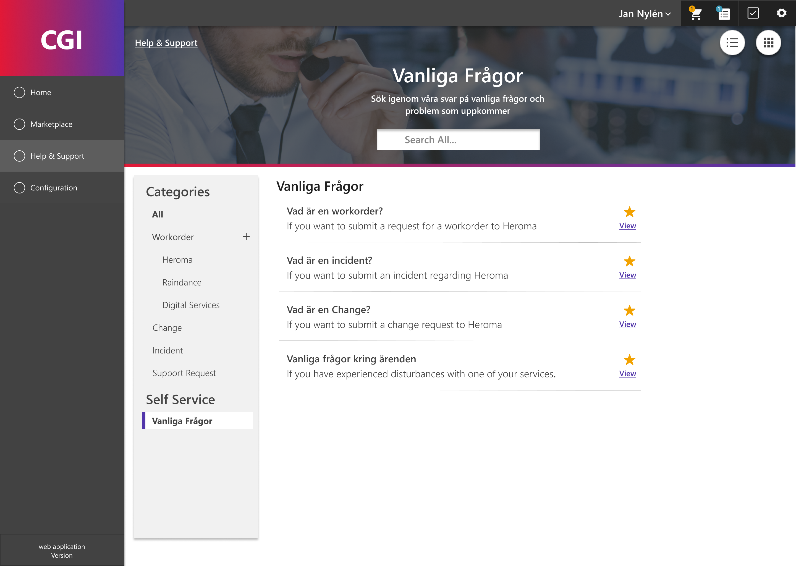

CGI 2018-2023
Customer Support Portal
As a frontend developer and UX-Designer I worked with designing new features for a customer portal and implementing them with Knockout.js and vue.js. Throughout 2019 I also took the lead on a UI/UX revamp of the portal. The purpose was to improve upon the problems that had been discovered since the first version of the UI was released.
I set out to find out which the most valuable areas to focus on were and started an iterative design process to reach a new design. This was done throught interview, user tests, and a variety of concepts and prototypes. Most of the initial ideation and UX-work was based on previous support issues and a series of UX interviews held at the start of the year.